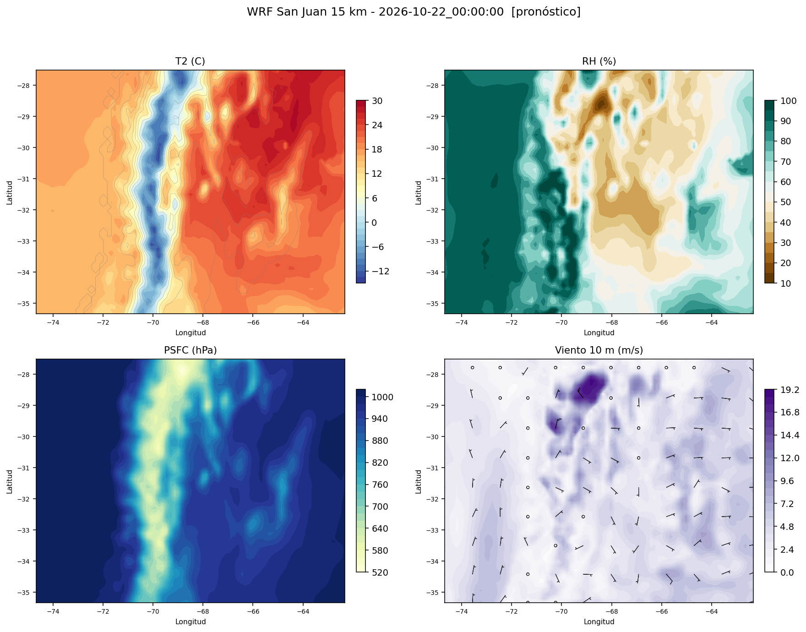
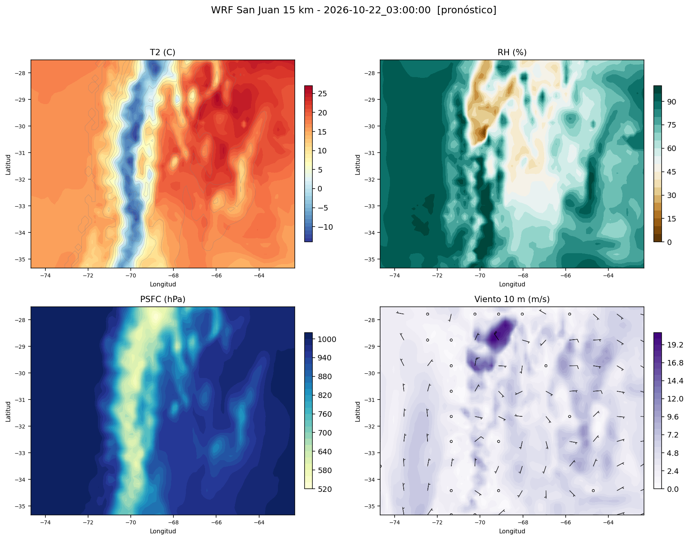
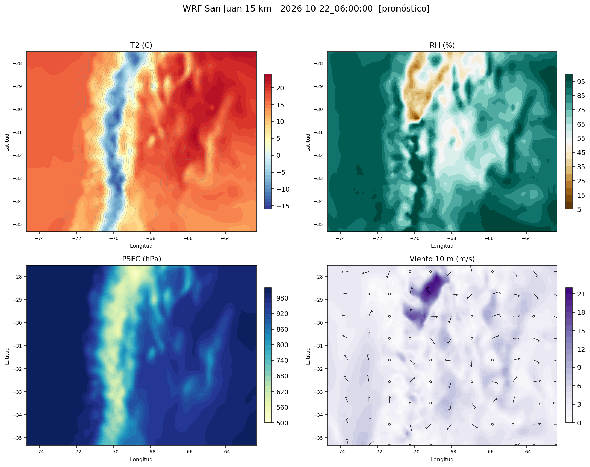
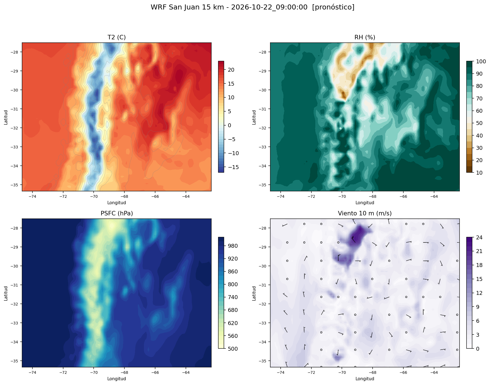
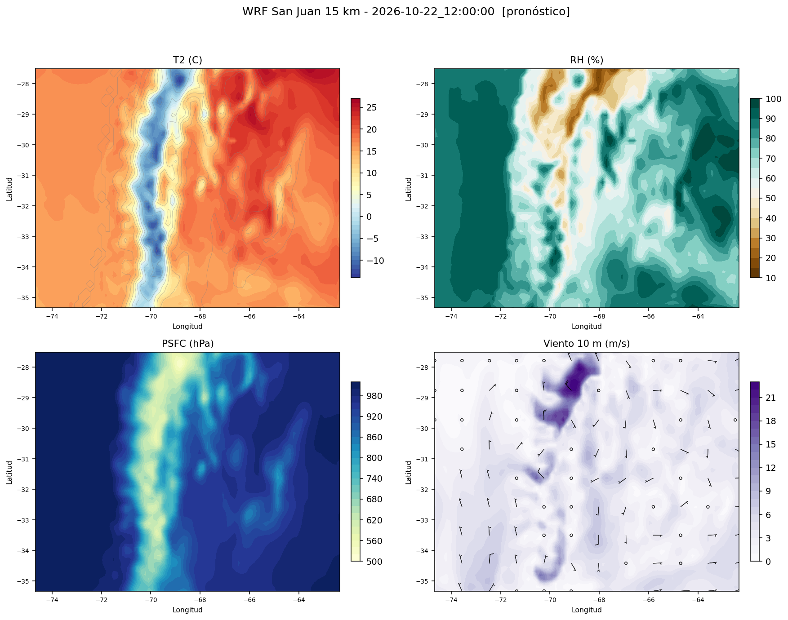
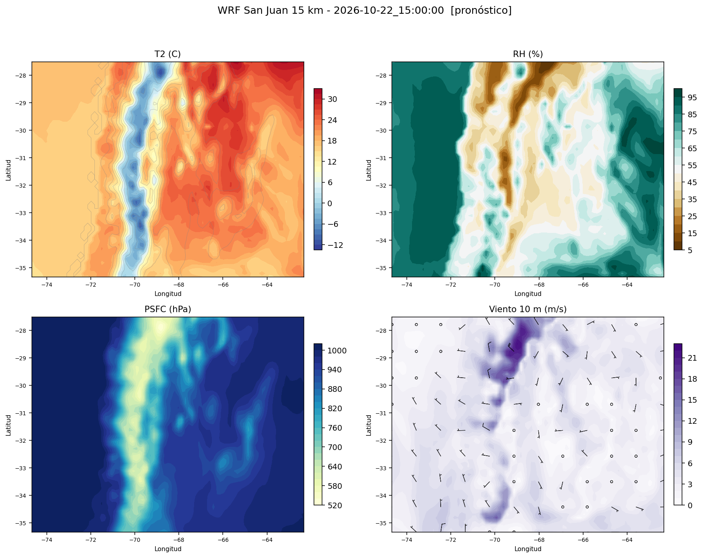
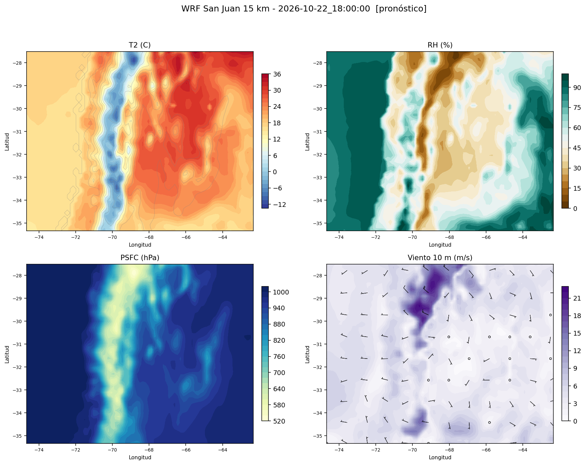
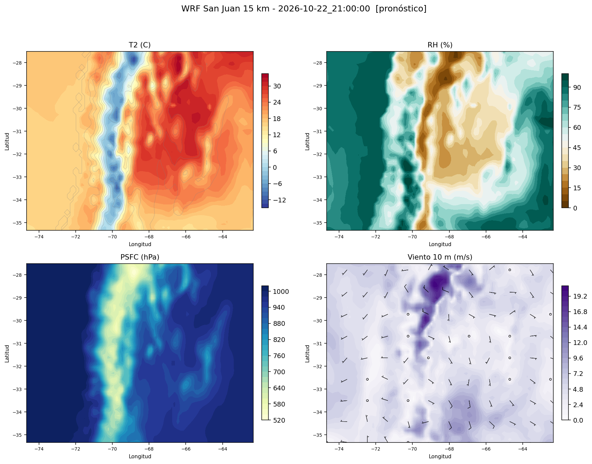

Ciclo 2026-10-21 12Z
Filas en gris: fase de asimilación (antes de t0). Sin sombrear: pronóstico libre. Celdas rojas: valor fuera del rango físico plausible (probable artefacto del modelo).







